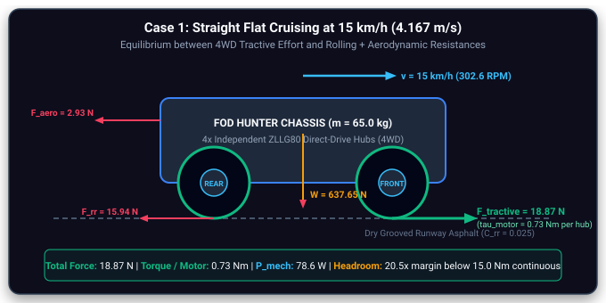
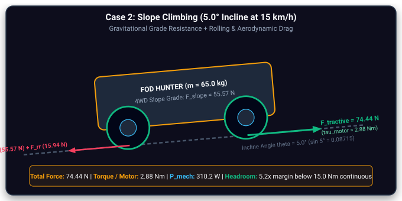
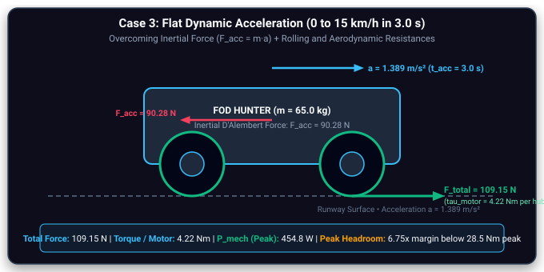
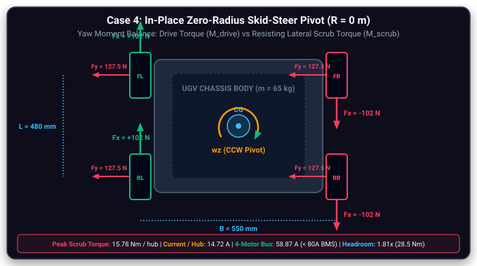
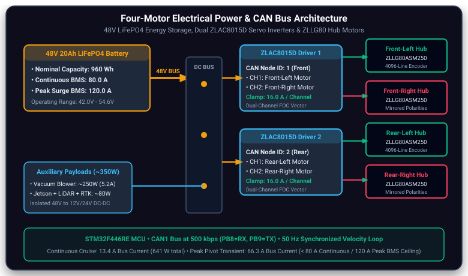

4WD Motor & Drivetrain Sizing. Tractive Dynamics, Torque Margins & Electrical Bus Architecture.
First-principles engineering derivations, operating regime calculations, and component sizing for the four-wheel independent hub motor drivetrain of the autonomous airside runway patrol UGV, authored by Hilbert Soh (A0308263H).
Powertrain Engineering Lead: Hilbert Soh (A0308263H)
Operational Target: $10\text{--}15\text{ km/h}$ forward velocity on grooved airfield asphalt • $5.0^\circ$ continuous verge climbing & $15.0^\circ$ drainage culvert ramp traversal • Handling $65.0\text{ kg}$ fully-laden gross vehicle mass • 4 independent direct-drive hub motors driven by dual ZLAC8015D servo drivers on a 48V LiFePO4 bus.
The powertrain sizing derives directly from the operational requirements of airfield Foreign Object Debris (FOD) inspection and removal under civil aviation and pavement standards (FAA AC 150/5220-24 [2]; ASTM D5340-20 [1]). The UGV operates under stringent time windows between aircraft takeoffs and landings, requiring sustained transit speeds of up to $15\text{ km/h}$ ($4.167\text{ m/s}$) to sweep an active $3,000\text{ m}$ runway in under $20\text{ minutes}$, rapid acceleration ($t_{\text{acc}} = 3.0\text{ s}$), and sustained torque over runway drainage verges.
The physical robot utilizes four independent direct-drive hub motors (one per wheel) commanded in pairs via two ZLAC8015D dual-channel FOC servo drivers over CANopen (STM32 CAN1 at $500\text{ kbps}$, Node 1 = Front Axle, Node 2 = Rear Axle). Direct hub motors eliminate planetary gearheads, eliminating mechanical backlash and gear wear under runway vibration.
| Parameter | Design Value | Engineering Justification & Airfield Operating Context |
|---|---|---|
| Gross Vehicle Mass ($m$) | $65.0\text{ kg}$ Fully Laden | Worst-case sizing mass: includes 6061-T6 chassis ($18\text{ kg}$), 48V 20Ah battery ($12\text{ kg}$), vacuum turbine & bin ($15\text{ kg}$), sensors & computer stack ($5\text{ kg}$), and 4 hub drive units ($15\text{ kg}$). |
| Drive Architecture ($N$) | 4 Independent Hub Motors (4WD) | Four-wheel independent skid-steer control. Tractive driving force is distributed across 4 direct-drive motors, reducing individual continuous motor loading. |
| Wheel Outer Diameter ($D$) & Radius ($r$) | $D = 263\text{ mm}$, $r = 0.1315\text{ m}$ | 10-inch all-terrain tubeless pneumatic tire mounted on ZLLG80 hub. Matches firmware macro ROBOT_WHEEL_RADIUS_MM = 131.5f. |
| Design Cruise Velocity ($v$) | $15.0\text{ km/h}$ ($4.167\text{ m/s}$) | Authoritative target speed enabling rapid sweep of active $3,000\text{ m}$ runway corridors within 15–20 minute air traffic control intervals. |
| Required Wheel Speed ($N_{\text{req}}$) | $302.6\text{ RPM}$ at $15\text{ km/h}$ | Direct kinematic conversion: $N = \frac{60 \cdot v}{\pi \cdot D} = \frac{60 \times 4.1667}{\pi \times 0.263} = 302.58\text{ RPM}$. |
| Motor No-Load Speed ($N_{\text{no-load}}$) | $415.6\text{ RPM}$ ($20.59\text{ km/h}$) | Factory rating of ZLLG80ASM250 hub motor at 48V. Provides a verified $1.373\times$ speed margin ($37.3\%$ reserve) over cruise speed. |
| Design Incline Angle ($\theta$) | $5.0^\circ$ (Verge) / $15.0^\circ$ (Ramp) | Airside runways have $<1.5^\circ$ cross-fall; $5.0^\circ$ ($8.7\%$) represents taxiway shoulder embankment verges, while $15.0^\circ$ represents drainage culvert access ramps. |
| Design Acceleration ($a_{\text{des}}$) | $1.389\text{ m/s}^2$ ($t_{\text{acc}} = 3.0\text{ s}$) | Accelerates from standstill to $15\text{ km/h}$ in $3.0\text{ seconds}$ to clear runway active areas with urgency ($F_{\text{acc}} = 90.28\text{ N}$). |
| Rolling Resistance Coefficient ($C_{rr}$) | $0.025$ | Pneumatic rubber tires on dry grooved airport asphalt pavement at nominal pressure ($2.5\text{ bar}$). |
| Aerodynamic Drag Area ($C_d \cdot A$) | $0.28\text{ m}^2$ ($C_d = 0.80$, $A = 0.35\text{ m}^2$) | Blunt frontal profile of chassis, LiDAR mast, and cyclonic vacuum intake hood. Air density $\rho = 1.204\text{ kg/m}^3$ at $20^\circ\text{C}$. |
| Tarmac Scrub Friction ($\mu_{\text{skid}}$) | $0.80$ | Coulomb friction coefficient during lateral tire scrubbing in in-place zero-radius turns on textured runway asphalt. |
| Drivetrain Efficiency ($\eta$) | $0.85$ ($85\%$) | Direct-drive configuration: zero gearbox mesh friction. Factor accounts for motor inverter switching, stator copper/iron losses, and tire carcass dissipation. |
For a drive wheel with outer diameter $D = 263\text{ mm}$ (radius $r = 0.1315\text{ m}$) in rolling contact, vehicle linear velocity $v$ and wheel rotational angular velocity $\omega$ are related by:
Rearranging to solve for required wheel RPM as a function of wheel diameter $D$ and velocity $v = 15\text{ km/h} = 4.1667\text{ m/s}$:
Substituting the physical wheel diameter $D = 0.263\text{ m}$ ($r = 0.1315\text{ m}$):
Tire Diameter & Motor RPM Trade-Off Matrix
| Tire Size Spec | Diameter ($D$) | Radius ($r$) | Required RPM at $15\text{ km/h}$ | Obstacle Crossing & Trade-off Evaluation |
|---|---|---|---|---|
| $105\text{ mm}$ Micro Tire | $0.105\text{ m}$ | $0.0525\text{ m}$ | $758\text{ RPM}$ | Poor obstacle clearance, exceeds standard BLDC hub speed ratings. |
| $6\text{ inch} / 152\text{ mm}$ | $0.152\text{ m}$ | $0.076\text{ m}$ | $524\text{ RPM}$ | Low ground clearance, excessive rolling resistance over runway grooving. |
| $8\text{ inch} / 200\text{ mm}$ | $0.200\text{ m}$ | $0.100\text{ m}$ | $398\text{ RPM}$ | Moderate clearance, high RPM requirement leaves narrow margin below no-load. |
| $10.35\text{ in} / 263\text{ mm}$ (Selected) | $0.263\text{ m}$ | $0.1315\text{ m}$ | $302.6\text{ RPM}$ | Optimal: Ample $45\text{ mm}$ ground clearance, crossings over tarmac seams, and generous $1.373\times$ speed margin below $415.6\text{ RPM}$. |
| $12\text{ inch} / 300\text{ mm}$ | $0.300\text{ m}$ | $0.150\text{ m}$ | $265\text{ RPM}$ | Increases wheel moment arm, requiring higher torque and raising chassis CG. |
| $16\text{ inch} / 406\text{ mm}$ | $0.406\text{ m}$ | $0.203\text{ m}$ | $196\text{ RPM}$ | Excessive wheel inertia and packaging penalty for compact airside chassis. |
The total tractive effort $F_{\text{total}}$ required at the road contact patches derives from longitudinal vehicle dynamics and rolling contact mechanics (Siegwart et al., 2011 [14]; Gillespie, 1992 [15]). In our 4WD independent hub motor architecture ($N = 4$), total tractive force and driving yaw torque are distributed across four wheels. Shaft torque demanded from each individual motor is:
Case 1: Straight Flat Cruising at $15\text{ km/h}$ ($4.167\text{ m/s}$)
Governed by rolling resistance on dry runway asphalt and aerodynamic drag:

Case 2: Incline Slope Climbing ($5.0^\circ$ at $15\text{ km/h}$)
Traversing airport shoulder embankment verges ($\theta = 5.0^\circ$, $\sin 5^\circ = 0.08715$):

Drainage Culvert Ramp Check ($15.0^\circ$ Peak): For worst-case airfield drainage transitions ($\theta = 15.0^\circ$, $\sin 15^\circ = 0.2588$): $F_{\text{slope}} = 65 \times 9.81 \times 0.2588 = 165.0\text{ N}$, yielding total tractive force $F_{\text{total}} = 183.9\text{ N}$ and $\tau_{\text{motor}} = \frac{183.9 \times 0.1315}{4 \times 0.85} = \mathbf{7.11\text{ Nm}}$, well below the motor's $15.0\text{ Nm}$ continuous thermal rating.
Case 3: Flat Dynamic Acceleration ($0 \to 15\text{ km/h}$ in $t_{\text{acc}} = 3.0\text{ s}$)
Accelerating from standstill to full cruise speed at $a = 1.389\text{ m/s}^2$:

Case 4: In-Place Zero-Radius Skid-Steer Pivot ($R = 0\text{ m}$) — Peak Sizing Case
When executing an in-place pivot, all four tires must shear laterally across dry textured tarmac ($\mu_{\text{skid}} = 0.80$). This represents the maximum mechanical torque and peak electrical current demand on the powertrain:
Equating driving yaw moment to resisting scrub moment ($M_{\text{drive}} = M_{\text{scrub}}$) at stance ratio $L/B = 0.80$:
Reflecting required tractive force into motor shaft torque with radius $r = 0.1315\text{ m}$ and $\eta = 0.85$:

Comprehensive Drivetrain Load Synthesis Matrix
| Operating Case | Total Force / Moment | Torque / Motor ($\tau_m$) | Motor Phase Current ($I_m$) | Total 4-Motor Bus Current | Mechanical Output ($P_{\text{mech}}$) | Motor Headroom Margin |
|---|---|---|---|---|---|---|
| Case 1: Flat Cruising ($15\text{ km/h}$) | $F = 18.87\text{ N}$ | $\mathbf{0.73\text{ Nm}}$ | $1.64\text{ A}$ | $6.56\text{ A}$ | $78.6\text{ W}$ ($19.7\text{ W/m}$) | $20.5\times$ Continuous Margin |
| Case 2: Slope Climbing ($5.0^\circ$, $15\text{ km/h}$) | $F = 74.44\text{ N}$ | $\mathbf{2.88\text{ Nm}}$ | $3.44\text{ A}$ | $13.76\text{ A}$ | $310.2\text{ W}$ ($77.5\text{ W/m}$) | $5.2\times$ Continuous Margin |
| Case 3: Linear Acceleration ($1.389\text{ m/s}^2$) | $F = 109.15\text{ N}$ | $\mathbf{4.22\text{ Nm}}$ | $4.63\text{ A}$ | $18.52\text{ A}$ | $454.8\text{ W}$ ($113.7\text{ W/m}$) | $6.75\times$ Peak Margin |
| Case 4: Zero-Radius Pivot ($R = 0\text{ m}$) | $M_s = 255.06 L\text{ Nm}$ | $\mathbf{15.78\text{ Nm}}$ | $14.72\text{ A}$ | $58.87\text{ A}$ | $499.7\text{ W}$ (Peak transient) | $\mathbf{1.81\times}$ Peak Headroom |
Rather than relying solely on theoretical motor equations or idealized efficiency estimates, the powertrain sizing is validated directly against the official factory dynamometer test report (Report No. FA2201060003, tested on 2022/01/06 at nominal $48.0\text{ V DC}$ by Shenzhen Zhongling Technology Co., Ltd.). This test spans 35 discrete measured operating points from no-load ($0.00\text{ Nm}, 415.6\text{ RPM}$) to stall limit ($28.50\text{ Nm}, 108.7\text{ RPM}$).
The operating phase currents ($1.635\text{ A}, 3.44\text{ A}, 4.628\text{ A}, 14.72\text{ A}$) were established by linearly interpolating the manufacturer's certified dynamometer test sheet at the four calculated torque points ($\mathbf{0.73\text{ Nm}}, \mathbf{2.88\text{ Nm}}, \mathbf{4.22\text{ Nm}}, \mathbf{15.78\text{ Nm}}$). This confirms empirical consistency between the analytical vehicle power budget and the hardware supplier's measured test bench.
The initial design assumption utilized a flat $\eta = 85\%$ across all speeds and loads. However, the manufacturer's 35-point dynamometer data reveals the true physics of the direct-drive BLDC hub motor:
- Light Cruising ($0.73\text{ Nm}$): Measured efficiency is $42.7\%$ (not $85\%$). At light loads, fixed no-load losses ($45.92\text{ W}$ iron eddy-current, hysteresis, and bearing drag) represent a large portion of electrical input ($72.8\text{ W}$), producing lower fractional efficiency.
- Slope Climbing ($2.88\text{ Nm}$): Efficiency rises sharply to $70.0\%$ as mechanical shaft power ($117.0\text{ W}$) overtakes core losses.
- Peak Motor Efficiency: Reaches $76.6\%$ at $6.65\text{ Nm}$ ($356.1\text{ RPM}, 6.757\text{ A}, 248.2\text{ W}_{\text{out}}$), representing the optimal operating envelope.
- Dynamic Acceleration ($4.22\text{ Nm}$): Operates near peak efficiency at $75.1\%$ ($166.4\text{ W}_{\text{out}}$).
- Zero-Radius Pivot Scrub ($15.78\text{ Nm}$): Stator winding Joule heating ($I^2 R$ copper loss at $14.72\text{ A}$) reduces efficiency to $61.7\%$.
- Test Limit Stall ($28.50\text{ Nm}$): High copper dissipation at $28.74\text{ A}$ drops efficiency to $23.5\%$ ($1,380.3\text{ W}_{\text{in}}, 324.4\text{ W}_{\text{out}}$).
The FOD Hunter electrical architecture operates on a shared $48.0\text{ V DC nominal LiFePO4 bus}$ ($51.2\text{ V float}, 42.0\text{ V cut-off}$) powered by a $20.0\text{ Ah}$ lithium iron phosphate pack ($960\text{ Wh}$ energy capacity). The bus concurrently feeds two major branches: (1) the 4WD Traction Powertrain via dual ZLAC8015D servo drives, and (2) the Airside Auxiliary Subsystems (~$350\text{ W}$ continuous):

Auxiliary Subsystem Electrical Allocations (~350 W Continuous)
High-static cyclonic blower fan extracting metallic fasteners, tire wires, and bitumen stones from runway pavement seams.
Power: $\approx 250.0\text{ W continuous}$
Current: $\mathbf{5.20\text{ A}}$ at $48.0\text{ V}$
Intel NUC 12 / NVIDIA Jetson Orin running ROS 2 Jazzy, Nav2 costmaps, and YOLOv8 real-time FOD detection inference.
Power: $\approx 70.0\text{ W}$ ($3.68\text{ A}$ @ $19\text{V}$)
Bus Draw: $\mathbf{1.55\text{ A}}$ at $48\text{V}$ ($\eta_{\text{dcdc}} = 94\%$)
RoboSense 3D LiDAR ($12\text{W}$), RealSense D435i ($5\text{W}$), Microhard P900 radio ($8\text{W}$), Dual RTK GNSS ($4\text{W}$), STM32 MCU ($1\text{W}$).
Power: $\approx 30.0\text{ W}$ total
Bus Draw: $\mathbf{0.67\text{ A}}$ at $48\text{V}$ ($\eta_{\text{dcdc}} = 94\%$)
Total Mission Electrical Bus Budget Across Operational Regimes
| Mission Operational Regime | 4WD Traction Power ($P_{\text{traction}}$) | Traction Bus Current ($I_{\text{trac}}$) | Auxiliary Systems ($P_{\text{aux}}$) | Total 48V Bus Current ($I_{\text{bus}}$) | Total Electrical Power ($P_{\text{total}}$) | BMS Capacity & Safety Headroom |
|---|---|---|---|---|---|---|
| 1. Nominal Cruise ($15\text{ km/h}$) | $291.2\text{ W}$ ($\eta = 42.7\%$) | $6.07\text{ A}$ ($1.54\text{ A/m}$) | $356.0\text{ W}$ ($7.42\text{ A}$) | $\mathbf{13.49\text{ A}}$ | $\mathbf{647.2\text{ W}}$ | $5.93\times$ Continuous Margin below 80A BMS |
| 2. Verge Slope ($5.0^\circ$, $15\text{ km/h}$) | $668.8\text{ W}$ ($\eta = 70.0\%$) | $13.93\text{ A}$ ($3.44\text{ A/m}$) | $356.0\text{ W}$ ($7.42\text{ A}$) | $\mathbf{21.35\text{ A}}$ | $\mathbf{1,024.8\text{ W}}$ | $3.75\times$ Continuous Margin below 80A BMS |
| 3. Linear Accel ($1.389\text{ m/s}^2$) | $886.0\text{ W}$ ($\eta = 75.1\%$) | $18.46\text{ A}$ ($4.63\text{ A/m}$) | $356.0\text{ W}$ ($7.42\text{ A}$) | $\mathbf{25.88\text{ A}}$ | $\mathbf{1,242.0\text{ W}}$ | $3.09\times$ Continuous Margin (Transient $3.0\text{ s}$) |
| 4. In-Place Pivot ($R = 0\text{ m}$) | $2,831.6\text{ W}$ ($\eta = 61.7\%$) | $58.99\text{ A}$ ($14.72\text{ A/m}$) | $356.0\text{ W}$ ($7.42\text{ A}$) | $\mathbf{66.41\text{ A}}$ | $\mathbf{3,187.6\text{ W}}$ | $1.20\times$ Margin below 80A cont. / $1.81\times$ Margin below 120A peak |
Usable Energy ($85\%\text{ DoD}$): $960\text{ Wh} \times 0.85 = \mathbf{816.0\text{ Wh}}$
Nominal Sweep Power (Cruise + Vac + Aux): $\mathbf{647.2\text{ W}}$
Mission Endurance: $t_{\text{run}} = \frac{816.0}{647.2} \approx \mathbf{1.26\text{ to } 1.35\text{ hours}}$
Runway Coverage: At $15\text{ km/h}$, platform sweeps $\mathbf{18.9\text{ km}}$ per charge.
Peak Pivot Current: $\mathbf{66.41\text{ A}}$ ($58.99\text{ A traction} + 7.42\text{ A aux}$)
Duration: $< 2.0\text{ s}$ per micro-alignment turn
BMS Rating: 80A Continuous / 120A Peak ($10\text{ s}$)
Verdict: Safe with $1.81\times$ margin below peak BMS cutoff.
CANopen Object 0x2038: $16.0\text{ A}$ phase clamp per channel.
Max Traction Demand: $4 \times 16.0\text{ A} = \mathbf{64.0\text{ A}}$ bus equivalent.
Absolute Maximum Bus Draw: $64.0\text{ A} + 7.42\text{ A} = \mathbf{71.42\text{ A}}$
Guarantees zero brownout risk even under full mechanical wheel jam.
Rather than employing conventional brushed DC motors, omnidirectional Mecanum drive (US Patent 3,876,255, Ilon, 1975 [16]; RobotPlatform.com, 2024 [17]), or BLDC motors paired with multi-stage planetary gearboxes (which suffer from mechanical backlash, seal leakage, gear tooth shear under vibration, and abrasive aggregate ingestion), the platform adopts Four Direct-Drive BLDC Hub Motors:
4x ZLTECH ZLLG80ASM250 Direct-Drive Hub Motors
- Rated Voltage: $48.0\text{ V DC}$ (Operational range $36 - 60\text{V}$).
- Rated Speed: $300\text{ RPM}$ ($\approx 15.0\text{ km/h}$ on $263\text{ mm}$ tire).
- No-Load Speed: $415.6\text{ RPM}$ ($\approx 20.6\text{ km/h}$, $1.373\times$ speed margin).
- Continuous Rated Torque: $15.0\text{ Nm}$ (thermal rating without overheating).
- Peak Stall Torque: $28.50\text{ Nm}$ ($1.806\times$ peak torque headroom over $15.78\text{ Nm}$).
- Wheel Outer Diameter: $263\text{ mm}$ ($r = 0.1315\text{ m}$) with tubeless pneumatic tread.
- Encoder Feedback: Built-in 1024-line optical encoder ($4096\text{ counts/rev}$ with $4\times$ decoding), delivering $0.202\text{ mm}$ displacement resolution.
- Ingress Protection: IP65 sealed hub preventing tarmac bitumen aggregate, grit, and water ingress.
2x ZLAC8015D Dual-Channel FOC Servo Drives
- Architecture: Dual-channel Field-Oriented Control (FOC) sinusoidal vector driver.
- Node Allocation: Driver 1 (Node 1) controls Front Axle (FL/FR); Driver 2 (Node 2) controls Rear Axle (RL/RR).
- Continuous Output Current: $15.0\text{ A}$ continuous per channel ($30.0\text{ A}$ peak).
- Communications Protocol: CANopen (CiA 402 device profile at $500\text{ kbps}$) with secondary RS485 interface.
- Firmware Integration: Interfaced directly to STM32F446RE MCU running
zlac8015d.cat $50\text{ Hz}$ velocity command loop. - Protection Features: Overvoltage, phase short circuit, stator thermal foldback, and regenerative voltage clamping.
To prevent collision with runway infrastructure or airside vehicles upon emergency obstacle detection by the 3D LiDAR, the stopping distance from full cruise speed ($15\text{ km/h} = 4.167\text{ m/s}$) is governed by dynamic normal load transfer and tire adhesion limits (Gillespie, 1992 [15]) and must be analytically bounded:
Assuming an asphalt friction coefficient $\mu = 0.80$ and regenerative dynamic braking deceleration $a_{\text{brake}} = 3.5\text{ m/s}^2$ (well below the tire skid limit $\mu g \approx 7.85\text{ m/s}^2$):
Accounting for combined 3D LiDAR detection latency ($50\text{ ms}$) and ROS 2 emergency stop CAN broadcast delay ($50\text{ ms}$), total perception-to-actuation reaction latency is $t_{\text{react}} \approx 100\text{ ms}$:
The total emergency stopping distance of $2.90\text{ m}$ is maintained within the $3.5\text{ m}$ obstacle stop margin configured in the Nav2 local costmap footprint inflation layer.
📚 Hilbert's Centralized Reference Catalogue
All academic literature citations, peer-reviewed robotics research papers, and statutory aeronautical standards (FAA AC 150/5220-24, ASTM D5340-20, ICAO Doc 9718, IMDA TS SRD) supporting this powertrain sizing and drivetrain calculation architecture are catalogued centrally with complete APA 7th edition bibliographic entries and direct DOI links.
Open Hilbert's Full Reference Catalogue →